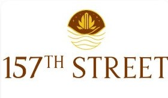
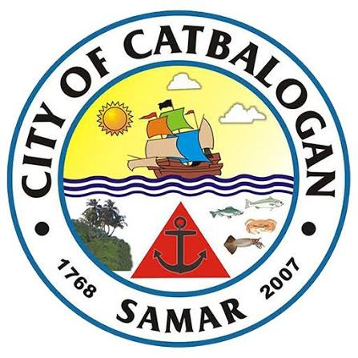
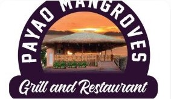
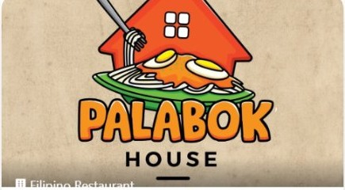
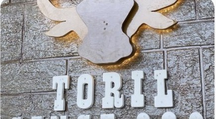

View Page157th Street Boutique Hotel
Catbalogan, the only one-stop shop business in the city that offers multiple services to customers, and where you can enjoy your favorite Chinese-Filipino deli, and more.

Dine with confidence at officially accredited Department of Tourism (DOT) establishments — offering certified culinary hygiene, outstanding Catbaloganon hospitality, and varied regional flavors.
Dine with peace of mind at officially accredited Department of Tourism (DOT) establishments in Catbalogan City — offering premier hospitality, curated menus, and exceptional culinary experiences.

View PageCatbalogan, the only one-stop shop business in the city that offers multiple services to customers, and where you can enjoy your favorite Chinese-Filipino deli, and more.

View PageThe latest chill-out place in Catbalogan. Not only that, you also have the best & most serene view just a few minutes from the bustling downtown.
Executive hillside resort in Guinsorongan offering premier dining, banquet catering, serene landscapes, and authentic local and continental flavors.
Mare e Monte, the city's first European restaurant, is led by Lourdes, shaped by 9 years in Italy, with her bro Marlon Ty—a Rome-trained, Sweden-based chef with 25 years of culinary mastery—serving Filipino food too.
We simply make it Fresh and Best! Homegrown Catbalogan staple serving freshly baked pizzas and comfort snacks.
A Cafe with a twist. It serves delectably crafted food and drinks that won't hurt your wallet.
To take good care of the customers and employees and provide high quality foods. Sizzling specialties and Filipino barbecue favorites.
Coffee shop with pastries and local delicacies. Premium roasted espresso, milk teas, and hearty merienda.

View PageTaste the Tradition. Renowned for authentic Samar-style savory noodle palabok, halo-halo, and classic merienda favorites.

View PageToril Grill and Resto Bar is the newest destination restaurant and outdoor venue with an overlooking view of the Maqueda Bay. It serves continental and international cuisines like Italian, American, and Korean, in addition to popular Filipino fare.
Saved items for your Catbalogan trip:
Catbalogan City is the provincial capital of Samar Province, strategically situated along Maqueda Bay in Eastern Visayas (Region VIII).
Province: Samar (Western Samar)
Region: Region VIII (Eastern Visayas)
Primary Gateway: Maharlika Highway (AH26) & Catbalogan Port
Nearest Airport: Calbayog Airport (approx. 1.5 hrs north) / Tacloban DZR Airport (approx. 2.5 hrs south)